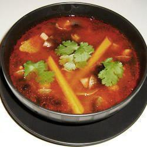

Authentic Thai Tom Yum

This Authenthic Tom Yum recipe has a kick and sweet taste to it and is bound to be made more than once!
Tom Yum Ingredients
- 710 ml chicken stock
- 15 g tom yum paste
- 0.5 clove garlic, finely chopped
- 3 stalks lemon grass, chopped
- 2 kaffir lime leaves
- 2 skinless, boneless chicken breast halves - shredded
- 110 g fresh mushrooms, thinly sliced
- 15 ml fish sauce
- 15 ml lime juice
- 3 g chopped green chile pepper
- 1 bunch fresh coriander, chopped
- 1 sprig fresh basil, chopped
Steps
- In a large saucepan, bring the chicken stock to a boil. Stir in the tom yum paste and garlic, and cook for about 2 minutes. Stir in the lemon grass and kaffir lime leaves. Place the chicken in the saucepan,
and cook 5 minutes, or until cooked through.Make the meat sauce.
- Mix in the mushrooms. Add the fish sauce, lime juice, and green chilli. Continue cooking until well blended. Remove from heat, and serve hot with the
coriander and basil sprinkled on top.